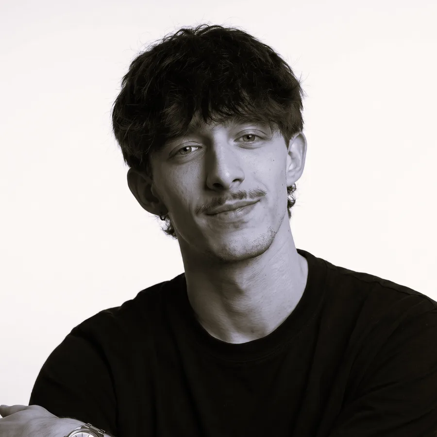
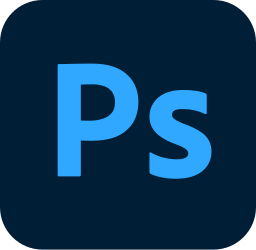
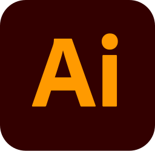
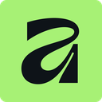
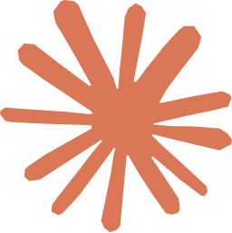

diseñador gráfico · buenos aires, argentina
Diseño gráfico para redes, marcas, campañas y web.
Diseño contenido para redes donde cada marca se ve como ella misma: composición, imagen y tipografía al servicio de su identidad.

social media
diseño de piezas para redes de 5 marcas · 69 piezasweb
4 sitios · WordPresssobre mí
Estudio el tercer año de la Licenciatura en Diseño Gráfico con orientación multimedial en la Universidad de Morón y soy Jefe de Diseño en Gimlet. En tres años dentro de la agencia pasé del diseño gráfico básico a dirigir el equipo de diseño, donde hoy coordino proyectos visuales y estrategias de comunicación para marcas reconocidas y clientes de alto alcance. Conecto el diseño tradicional con el digital: desarrollo sitios web en WordPress (maquetación y nociones de código) e incorporo herramientas de inteligencia artificial como Claude, ChatGPT y Higgsfield para agilizar procesos y generar contenido.
experiencia
- Jefe de DiseñoGimlet Agency
- Diseñador gráficoAutónomo, marca de indumentaria
- Diseñador gráfico freelanceMailings, newsletters y videos internos para una farmacéutica
- Lic. en Diseño Gráfico multimedialUniversidad de Morón, cursando 3.er año
- B2 First (First Certificate in English)Cambridge English
servicios
- Piezas para redesfeed, historias, carruseles
- Sistemas de plantillaspor marca
- Dirección de artecampañas
- Páginas webdiseño y rediseño
formatos
- Feed1080×1350
- Historias1080×1920
- Carruseles1080×1350
- Animacionesloop
herramientas

imagen y retoqueAdobe Photoshop
vector y tipografíaAdobe Illustrator
diseño y maquetaciónAffinity- sitios webWordPress
 piezas rápidasCanva
piezas rápidasCanva- mailingsMailchimp

IA para procesosClaude generación con IAHiggsfield
generación con IAHiggsfield
contacto
¿Tenés una marca, una campaña o un sitio en mente? Escribime y lo armamos juntos.
luciano.giacoia@gmail.com